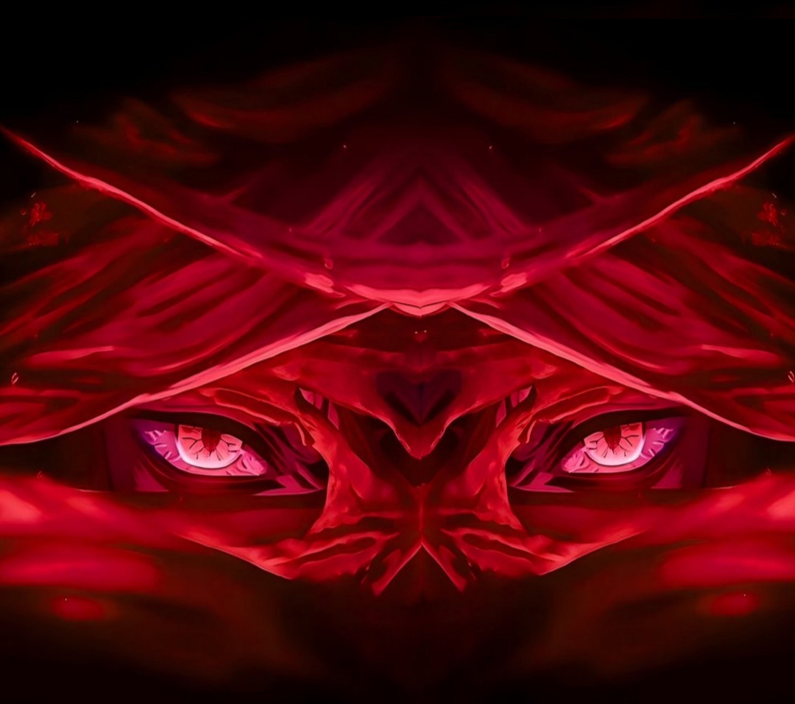

s·¥ß…¥·¥Ö·¥á·¥á·¥ò s ú·¥ß Ä·¥ç·¥ß

…™…¥ Íú±·¥á·¥ß Ä·¥Ñ ú ·¥èÍú∞ Ä·¥á·¥†·¥á…¥…¢·¥á
·¥ß…¢·¥á: ùü£ùü´
ü·¥è·¥Ñ·¥ß·¥õ…™·¥è…¥: ·¥Ö·¥á ü ú…™
サンディープ
·¥ò è·¥õ ú·¥è…¥
ú·¥õ·¥ç ü
ᴄꜱꜱ
·¥ä·¥ß·¥†·¥ßÍú±·¥Ñ Ä…™·¥ò·¥õ
‚ñ∂ ·¥ò ü·¥ß è ·¥ç·¥úÍú±…™·¥Ñ
Your browser does not support the audio element.